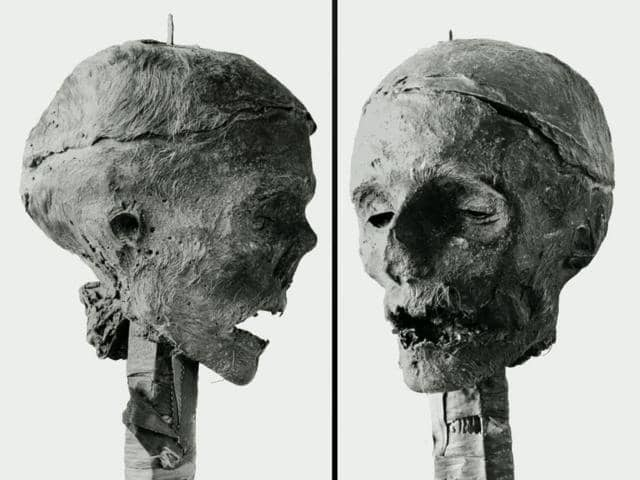
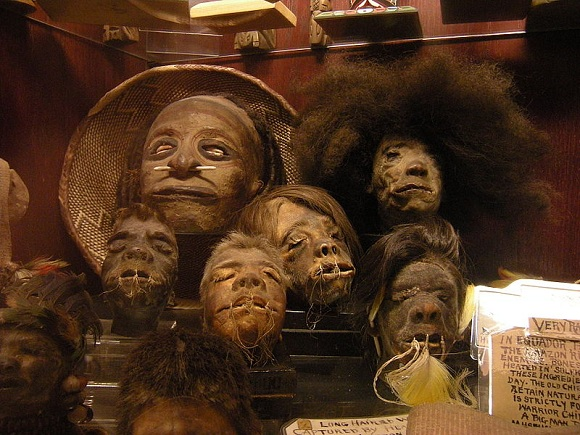
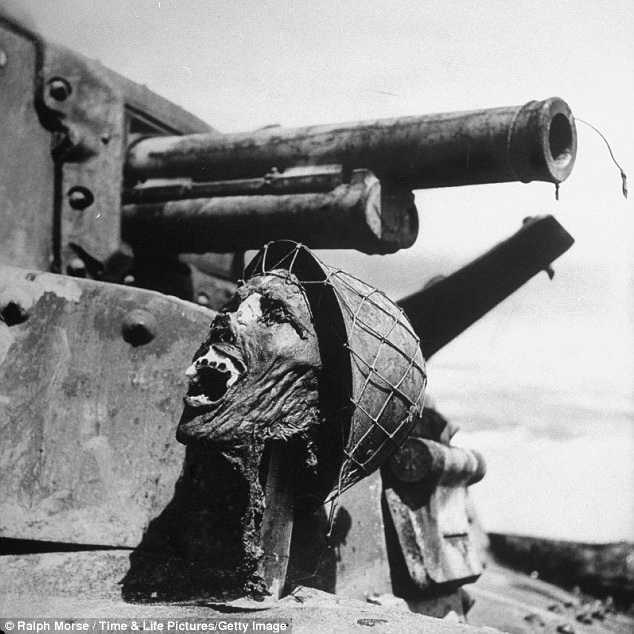
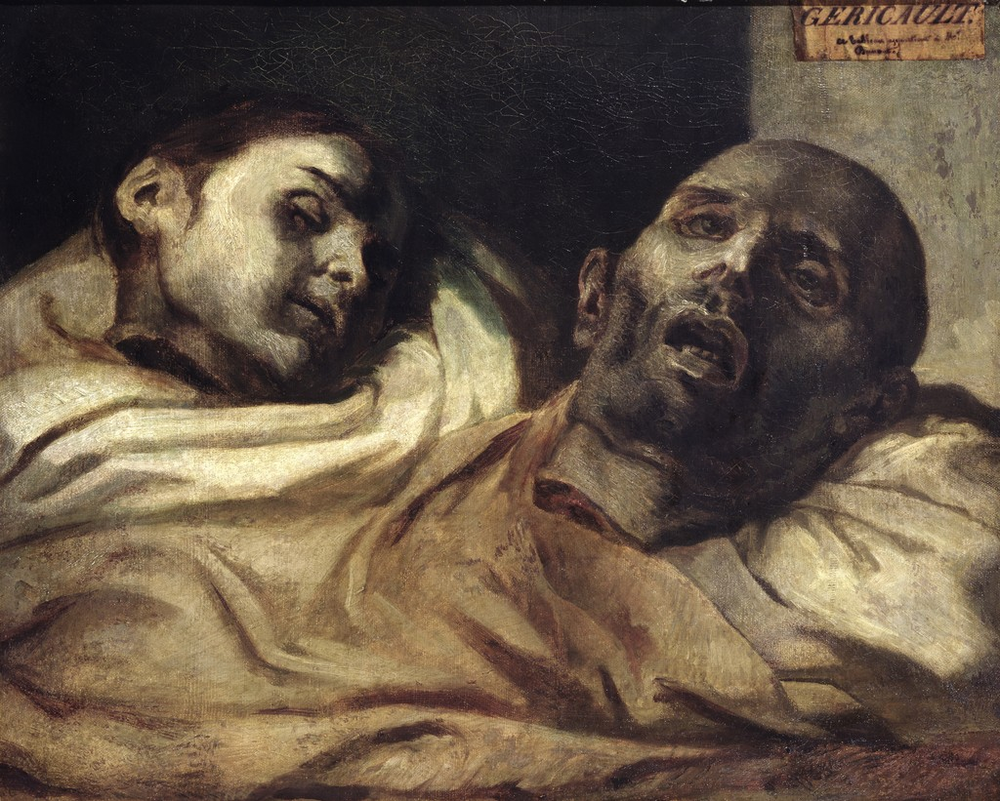

Severed: A History of Heads Lost and Heads Found
Table of Contents
1 序言
约西亚·威尔金森喜欢带着奥利弗·克伦威尔的头颅去赴早餐会。160年前在泰伯恩刑场上洞穿克伦威尔颅骨的那根已经断掉的金属长钉，提供了一个很方便的把手，让客人们可以抓着这个把手，一边吃着芥末腰子，一边查看这个坚韧的遗物。
克伦威尔本人 1658 年 9 月 3 日死于热病。两年半后，在复辟王朝政府大肆报复「杀死国王的凶手」期间，这位护国公经过防腐处理的尸体从威斯敏斯特教堂的陵墓里被挖了出来，放在囚笼里拖着走遍伦敦的大街小巷，随后被吊在泰伯恩刑场的绞刑架上，并被斩首。几天后，他的首级被钉在一根 20 英尺长的旗杆上，竖在威斯敏斯特宫的屋顶，好让全伦敦人都能看到。那颗金属长钉在敲进他的脑袋时由于用力过猛，以至穿透了颅骨的顶部，钉子和颅骨从此再也不会分开。
据说，在 17 世纪末的一个夜里，一场暴风雨把克伦威尔的头颅刮了下来。不久之后，它出现在一家博物馆的陈列柜里。在 18 世纪，它开始在私人之间流通，成了一件古董、一件珍贵的遗物和一个商机。整个 18 世纪，克伦威尔的头颅在不同展览经理人的手里流转，每一次都能赚钱。唯一的问题是损耗。在某个时刻，大概早在泰伯恩刑场的那个日子，克伦威尔就丢失了一只耳朵和几颗牙齿。他的鼻子被压碎了，他的头发越来越稀疏，他的肉已经脱水并收缩，他的皮成了黄褐色，并被拉伸，变得十分坚韧。这个又干又硬的物体那很不协调的外表使得它成为一件有效的死亡警示物（拉丁语：memento mori），因为凡是把玩过克伦威尔这颗头颅的人，很少有不思考自己终有一死的宿命的。这就是死亡看上去的样子。
在 1960 年一个小规模的私人仪式上，克伦威尔的头颅被装进了古老的橡木盒子，埋在了剑桥大学西德尼·苏塞克斯学院教堂门厅地板下的某个地方。剑桥大学对确切的位置守口如瓶。

2 导言
人类历史上塞满了砍下的头颅。千百年来，人头就几乎一直装饰着我们社会的各个方面，从断头台到大教堂，从解剖室到画廊。我们的斩首传统源远流长，甚至到今天依然存在。
一颗被砍下的人头是如此地有魔力。死人的脸危险，却诱人。它们是时间的旅行者，它们居住在活人和死者的国度；既有生命，又没有生命。只要面对另一个人的头，就不能不产生这样一种理解：我们是在凝视自己。它从另一个世界看着我们，我们所有人都注定要去那里。它让死亡对生命施加压力。用一句经典格言来说：「尔之今日，正像我之从前；我之现在，恰如尔之将来。」
一颗被砍下的人头，打乱了我们的轻松分类，因为它同时是一个人和一样东西。一颗被砍下的人头可以是很多种东西：一个惹人喜爱的东西，一件战利品、科学材料、犯罪证据、一件教具、一件宗教遗物、一个艺术灵感之源，一个恶作剧。它可以是一宗生意、一个交流助手、一件政治抵押物，或者一件传家宝；它可以同时是很多这样的东西。它的定义很不稳定，这些定义戏剧性地摇摆变动，这正是人的遗存为什么拥有让我们心烦意乱的力量的原因之一。
人头是生物体的动力源，它容纳了五种感官能力的四种：视觉、嗅觉、听觉和味觉。它装着大脑，这是我们神经系统的核心。它吸入我们呼吸的空气，传达我们说出的话语。几乎每一个进入你身体中的微粒，要么养育你，要么提供关于这个世界的信息，而这都是通过头部进入的。
其他大多数动物的脖子都更粗、更短、肌肉更发达，因为它们不得不以一种向前的姿势来保持脑袋在身体的前方。人头因为坐落在脊柱的顶部，脖子的后面不需要太多的肌肉组织。我们脖子上的肌肉如此之少，以至于你透过皮肤，很容易就感觉到主血管、淋巴腺和椎骨的存在。简言之，砍下一颗人头，远比砍下一头鹿、一头狮子或其他任何动物的头颅都更加容易。
人的脖子可能十分脆弱，但要把头跟身体分开依然很难做到。迅速砍下一个活人的脑袋，需要有力而精准的行动，以及一把锋利而厚重的。刀即使杀手经验丰富、受害人也被捆绑起来，也要砍很多下才能砍下一个人的头。
砍头是一种速度很快的方式，虽说究竟有多快谁也没有把握，因为没有一个人能够在足够长的时间里保持清醒的意识，以便提供一个答案。某些专家认为，这是由于大脑迅速失去血压，意识维持不了两秒钟。另外一些人认为，当大脑耗尽了血液中所有可用的氧气时，意识便不复存在，在人的身上，这大概要花 7 秒钟左右。砍头可能是痛苦最小的死亡方式之一，但它依然被认为是痛苦的。很多科学家相信这一点，不管实施得多么快，砍头也必定导致一两秒钟的剧痛。
3 第一章：干缩人头
那些把自己的鼻子紧贴着牛津大学博物馆展示柜玻璃的，并不是舒阿尔人。当游客们来到皮特河博物馆观看干缩人头时，他们实际上看到的，是一个关于白人火枪的故事。这些干缩人头，与其说是某种未受外界影响的野蛮生活方式的遗存，不如说是殖民扩张的经济和关于「野蛮文化」的幻想力量的产物。
舒阿尔人猎头习俗的全盛时期是在 19 世纪晚期。当时，猎头袭击被繁荣的国际干缩人头贸易所推动。欧洲人想要舒阿尔人的干缩人头，舒阿尔人想要欧洲人的刀枪大炮。火枪不仅为舒阿尔人的猎头袭击者提供了经济激励，而且还被证明是抢先拿到人头的最佳手段。火枪被用来猎取人头，反过来，人头可以换取更多的火枪。直至 20 世纪，人们普遍公认，一颗人头的价格等于一杆火枪。
随着与外国人之间的贸易迅速增长，「火枪换头」的生意便得以确立，猎取人头的精神意义——获取受害者的灵魂并在活人当中利用它的力量——越来越小，干缩人头常常变得只是一件加工过的商品。如今，有些舒阿尔人杀人只是为了卖他们的人头。就这样，欧美人帮助制造了他们期望找到的不加区别、残忍嗜血的猎头者。
干缩人头的需求如此之大，以至于当没有尸体可用时，一些机会主义者便转向了干缩猴子和树懒的头，只要在尺寸上进行缩小并加以「改造」，常常能骗过那些猎奇者。在皮特河博物馆里展示的十个干缩人头当中，两个是树獭的头，两个是吼猴的头，剩下的六个头当中，三个是为了售卖而伪造的。伪造的三个人头则讲述了无名死者的故事，他们是一贫如洗的人和被社会遗弃的人，死后成了异域收藏品国际贸易的受害者，它们和亚马逊丛林居民的本土信仰没有什么关系。

传统上，毛利人是在部落间交战时候猎取人头的。毛利人的战利品人头没有经过干缩处理，而是让颅骨依然在头皮之内加以保存。毛利人酋长那精细复杂的纹面，使得他们的头颅对欧洲人来说特别有吸引力。对纹面人头的需求是如此之大，以至于到 19 世纪初期，毛利人的酋长强行给他们的奴隶纹面，然后杀死他们，为的是出售他们的人头谋利。有些酋长还把活的臣民提供给商人选择，然后按照客户的要求纹面、杀死并腌制。
一个多世纪以来，婆罗洲、爪哇和苏拉威西岛的村庄流传着这样的谣言：一些人在夜里鬼鬼祟祟地四处搜寻人头，或者政府派出的陌生人到处绑架孩子，为的是把他们的头颅埋在新修的公路和桥梁下面，以便加固它们。有一些故事说到外国人拿着金属盒子，开着白色的货车，里面装满了婴儿的血、肉、头和身体部件，他们用这些东西发电。
具有讽刺意味的是，度假者们来到松巴岛，是为了体验一种据说狂野、遥远、可能也很危险的部落文化，而自始至终，松巴岛人则认为，这些探访他们的外国游客看上去就像凶残的野兽，他们的头发有一种与众不同的、令人不快的气味，他们使用那些无处不在的「金属盒子」（照相机），取走孩子们的血。
4 第二章：战场上的人头战利品
第二次世界大战期间，人们对日本纪念品有很大的需求，不仅在太平洋地区服役的士兵们中间，而且在美国国内也是如此。整个太平洋地区的盟军部队都已经习惯了作为战利品的人头，有时候，美国人等不及受害人死去，便把他们的口袋和背包掏空，拿走他们的枪、刀子、旗子、头盔、照片、身份牌，敲下他们的牙齿，有时候甚至割下他们的耳朵，他们的手指，偶尔还有他们的头颅。把人的骨头寄回国内，作为礼物送给自己所爱的人，这种情况并不少见。
据一份法医报告估计，1984 年从马里亚纳群岛被送回本国的日本战死者当中，有 60% 的尸体丢失了头颅。美国法医科学家们所记录的第二次世界大战期间的所有战利品骷髅全都是日本人的，没有记录表明欧洲战区有人猎获过战利品人头。
斑疹伤寒和疟疾的大爆发。在太平洋地区死去的人，绝大多数死于疾病、高温、意外和饥荒；在战争的某些阶段，这些伤亡大大超过战斗伤亡，高达 100 比 1。
周围到处都是死人，处在各种不同的腐烂阶段。严重受损的尸体挂在带刺铁丝网上，漂浮在河里，成百上千地躺在他们倒下的地方，从泥泞的地面和浅平的坟冢中伸出。很多尸体被杀死他们的爆炸给弄得残缺不全，被凝固汽油弹烧焦，被暴露在热带气候中而变得乌黑。人的身体部件成了稀松平常的寻常事物。生活环境导致了某种程度的社会退化，士兵们失去了在国内框定他们生活的所有正常的社会结构。他们被死人所环绕，他们奉命杀人，他们认为自己即将死去。
日本人在美国公众和武装部队的心目中被彻底非人化了。在宣传中和媒体上，他们被描绘为有着非理性自杀倾向的武士，对丛林战有着一种美国人无法理解的喜爱。一位海军陆战队员评论道：「我希望我是在跟德国人战斗。他们是人，像我们一样。但日本鬼子就像动物一样，他们习惯于丛林，仿佛他们就是在那里长大的，像有些野兽一样。」

Figure 1: The Battle for Guadalcanal: A Japanese soldier's burned head staked on a tank
1944 年 11 月，当日本人释放出成百上千的神风特攻队的自杀式飞机，扑向莱特湾的美国舰队，希望阻止入侵日本本土时，「蒙彼利埃号」便是他们的目标之一。在这场战役中，美国防空火力如此猛烈，以至于飞机和日本飞行员身体的部件像雨点一般落在战舰的甲板上。甲板上布满了鲜血、肠子、脑浆、舌头、头皮、心脏、手臂。
自 20 世纪大规模强征入伍出现以来，训练制度故意要通过身体虐待和口头辱骂来剥夺新兵们的身份认同。在新兵们进入的这个世界里，士官有着不受限制的权力，攻击性有着很高的价值，外人被非人化，他们生活的地方的每一个细节都由别人来设计。严酷的训练策略帮助侵蚀了平民的价值观，也创造出了更有效率的杀手。
第二次世界大战期间，在太平洋列岛的丛林里，实施暴行的士兵们回顾起他们的经历，仿佛是在思考别人的事情：「那不是我，某件事情发生在我身上」；或者：「我只是以任何可能的方式开始杀人。我只是做了。我不知道我心里是怎么想的。」陌生的风景，因为与他们的日常生活缺乏任何联系，造成了承受道德秩序的颠倒。当你置身于一个不同的世界，做一个不同的人也就更容易一些。
在战争的历史上，阵亡者常常是看不见的，但他们到处都有。死亡无处不在，因此，死亡成了日常生活的组成部分，其方式外人无法理解。这大概是老的战利品骷髅在今天为什么令人不安的原因之一：它们把死神的世界带到了此时此地，促使我们试图去理解无法理解的东西。
5 第三章：欧洲的断头台文化
第一个在伊拉克被斩首的美国人是工程师尼克·贝尔格，他在 2004 年 4 月 9 日被绑架，5 月初就被杀害。尼克·贝尔格的斩首视频成了网上热搜词条之一。贝尔格被处决两天之后，最早贴出视频的那家与基地组织有关的网站，被一家为它提供服务器的马来西亚公司关闭了，原因是网页的访问量过大，造成了堵塞。不到一天的时间，贝尔格的斩首视频成了像谷歌、莱科思和雅虎等搜索引擎的顶级搜索词条。贝尔格的死触发了大量类似的斩首，都是伊拉克的很多恐怖主义武装组织干的，并被拍成视频在网上传播。
贝尔格被杀时，视频的流行凸显了当互联网开始制造新闻时，它在多大程度上让更传统的新闻媒体黯然失色。互联网允许人们抗议主流媒体明显的「审查」。杀人者之所以把他们的视频发布到互联网上，是因为他们知道，新闻媒体将被迫随大流。电视的新闻节目要么拒绝网上可以免费获得的视频，从而让自己变得多余，要么就做杀手们恰好希望的事，向范围更广泛的观众播放这样的视频。只要有一台摄像机和能够访问的互联网，一个激进组织就可以制造出一桩「国际媒体事件，有着巨大的战略冲击力」。
在过去的两百年里，死刑执行之所以逐步从公众的眼前隐去，这更多的与上流社会的成见有关，而和大众舆论的关系不大，始终有人乐意观看处决。我们想当然地认为我们对残忍死刑仪式的反感是自然的和本能的，但实际上并不是。恰恰相反，公开处决不仅不让中世纪的目击者特别震惊，而且也并不让 18、19 甚或 20 世纪的目击者特别震惊。历史的教训是，目睹斩首及其他形式的处决在我们作为人的能力范围之内，不止如此，我们还可以把它们作为流行的公共事件来欣赏。
在整个欧洲，成千上万的人来观看人被绞死、肢解和折磨致死。他们付很高的价钱来购买最好的座位，他们把这看作是一种娱乐形式。1757 年著名的、格外残忍的对罗伯特-弗朗索瓦·达密安的处决，即所谓的「世纪处决」，成千上万的人挤满了格列夫广场的街道、大楼和屋顶，等待观看达密安被熔铅和沸油所折磨，然后由几匹马缓慢而笨拙地把他撕得七零八落，再由刽子手剁成碎块，人群中没有一个人大呼小叫。「巴黎人似乎都像是伸长脖子呆看的人，行为举止一如平常，甚至有些无动于衷。他们既没有表现出痛恨，也没表现出怜悯。」
雷尼·贝西亚在 1936 年被绞死的时候，据估计有两万人围观，这是美国最后一次公开执行的死刑。三年后，一大群容易激动的民众聚集在凡尔赛的圣皮埃尔监狱外，观看臭名昭著的德国连环杀手欧根·魏德曼被送上断头台。魏德曼成为法国最后一个被公开处决的人。
在城市周围维持人头的良好展示要花大量的时间和努力。三百多年来，从 14 世纪到 17 世纪，一直有一个「管头人」住在伦敦桥的门楼里，他的工作就是尽最大努力看管叛国者的人头和身体部件。
在很多欧洲国家，斩首被理解为一种可敬的、不那么痛苦和羞辱的死亡方式。跪下或躺倒接受锋利刀刃的一击，比挂在绞索上摇来晃去更有尊严，而且，在一个称职的刽子手手里，死亡几乎是瞬间发生的。
汉堡的刽子手克劳斯·弗拉格在 1488 年完成了一项引人注目的壮举：他连续不断地砍下了 79 个海盗的脑袋。当参议院问他对完成这一壮举有何感觉时，他答道：」我感觉很好，以至于我还可以轻松地继续下去，把整个参议院都做掉。」表面上，参议员们被逗乐了，但弗拉格的傲慢无礼让他付出的代价是自己的脑袋。
最近两百年的时间，我们见证了越来越谨慎的处决方法在整个欧洲和美国的引入，从 19 世纪晚期长坠式绞刑的引入，到致命注射的使用。但我们并不清楚，一种看上去好像不那么暴力的死法是不是必定更加人道。美国的一些研究表明，选择行刑处决的囚犯在开枪后的一分钟内便实现了完全的心脏死亡，而典型的无并发症致命注射要花上 9 分钟的时间才能杀死一个人。
在 19 世纪的欧洲，断头机作为一种处决方法的显著地位，迫使人们面对一次极其突然而生动的从生到死的过渡。断头机的受害者们并没有像他们在绞刑架上那样拼命抵抗死亡，或者陷入人事不省之中。相反，人头能够以惊人的速度从身体上砍下来。断头机的机械装置是如此之快，以至于观察者不由得惊奇万分，死亡是否有可能这么快地发生：致命的一击之后，生命多半依然在这些不幸的头颅里坚持。由于没有一个人在斩首之后存活足够长的时间来满足生者的好奇心，因此也就不可能知道，在断头机的刀片之下，死亡究竟是何种感觉——如果真的有什么感觉的话。
要杀人，断头台是最人性的工具之一。首先它很快，而且几乎不会出错。只需一个简单的动作，被砍的人也不会太痛苦。当它在 1792 年 4 月作为官方的行刑方法被引入法国时，原打算让处死人这桩残忍勾当变得更干净、更利索、更可靠，因此也更人道，更不那么壮观。
一台机器不可能看人说话。斩首不再是被告通过死亡让自己名扬天下的手段；相反，它会剥去个性，把每个人简化为同样的基本生物成分：头颅和身体。最早目击断头机的观众并没留下什么深刻印象。他们已经习惯于更戏剧性的场面。机器太快，太马虎潦草，没什么东西可看。很少有任何失误，没有给混乱留下什么空间，断头机上的人几乎没有任何互动。
死亡不再出自刽子手本人之手。相反，击打的力量由一台机器控制，刽子手的角色因此得到改变：从一个恶魔般的刀斧手变成了一个设备齐全、有点挑剔的工程师。
斩首进入了批量生产时期。在 1793 年 6 月末开始的恐怖统治时期的 13 个月里，有数万人被杀，当时，断头机似乎统治着法国，据说以每分钟一颗的速度砍掉人头。
断头机把斩首转变成一套不带感情的程序，尽可能把残忍程度最小化，但从死亡中拿走戏剧性是一个危险的理想。恐怖统治足以证明，唯一比砍头更恐怖的事情是一个这样的社会：人们发现砍头原来平淡无奇。
死刑执行的稳定供应开始被人们所接受甚至是要求，以作为好政府的证据。当反对死刑的法利埃总统在 1900 年代初把所有死刑判决减刑为终身监禁时，法国抗议者在巴黎的大街上振臂高呼：「Vive la guillotine!」
6 第四章：人头与艺术再创造
死亡面具支持了这样一个观念：死亡的瞬间揭示了最纯粹的主题。从亚伯拉罕·林肯到阿尔弗雷德·希区柯克，从威廉·华兹华斯到詹姆斯·迪安，数不清的作家、政治家、作曲家和名流要人，都在他们死后的几个小时内，让人把一层层石膏浇在他们的脸上，以便让他们面孔的准确印象永久性地留下来。
在《新约》中，希律王的继女——通常被认为是莎乐美——在他的生日宴会上跳舞。国王被她的表演给迷住了，提出可以满足她的任何愿望，在跟母亲商量之后，莎乐美要求得到施洗者约翰的人头，并装在盘子里。约翰曾公开谴责希律王与莎乐美母亲之间的婚姻，他在监狱里被处死了，他的人头被装在一个大浅盘里带给了莎乐美。
Figure 2: Salome with the Head of John the Baptist by Bernardino Luini
犹滴是一个富有而美丽的寡妇，离开了她那座遭到围攻的城市伯修利亚，打算去迷惑荷罗浮尼并推翻他的亚述大军。她答应把本民族的秘密告诉荷罗浮尼，以赢得了他的信任，在他一次醉酒熟睡之后，犹滴拔出了他的剑，割下了他的头，作为一个标志带回给了犹太人。

Figure 3: Judith Beheading Holofernes by Caravaggio
泰奥多尔·席里柯创作了有史以来最令人震惊的被砍头颅的油画。他的油画《被砍下的人头》和《一个被断头机处死的人的头》都是残忍得毫无愧意的作品。人头摆放在沾满血渍的白布褶皱中。一个人头张着口、睁着眼，对自己的暴死深感震惊。

Figure 4: Heads Severed by Théodore Géricault
《美杜莎之筏》描绘了法国海军护卫舰「美杜莎号」遭遇海难之后幸存者们乘坐的那个木筏，1816 年 7 月，这个木筏在大西洋上漂浮了 12 天。在 147 个漂流者当中只有 15 个人幸存下来，另有 5 个人在他们获救之后的几个月中死去。「美杜莎号」是一个非同寻常的关于饥饿、脱水、食人和疯狂的故事，法国公众对这个故事的痴迷始于 1816 年后期。席里柯为了研究死亡对人体的影响，把自己的画室变成了一间停尸房，收集来自本地医院的人体部件，在它们腐烂的过程中加以研究。
Figure 5: The Raft of the Medusa by Théodore Géricault
在 19 世纪，停尸房是巴黎最吸引公众关注的地方之一，其参观者每年多达100万人次。惨死是当时巴黎生活的组成部分。那是一座肮脏而有病的城市，居住着很多由于战争或贫困而致残的人。在这座城市里，每周都要在断头台上向嘲笑奚落的围观人群公开表演残忍的斩首。
在大革命期间的巴黎，杜莎夫人还是个三十多岁的年轻女人时，便开始塑造断头台受害者们的雕像。杜莎夫人蜡像馆因为展示革命者的人头而一举成名。攻占巴士底狱之后，大革命最早的受害者被砍下的头颅被从旗杆上取了下来，并被火速送到她的沙龙，她坐在展馆的台阶上，把两颗血污的人头放在自己的膝盖上，取他们的脸部印模。她还声称，曾把她的朋友罗伯斯庇尔的人头放在膝盖上，雕塑它的形象，而且是刚刚从断头台上拿来的；她还记得，宪兵队如何把她叫到马拉被刺杀的现场，她在马拉躺在浴缸里，身体尚热，还在流血的时候，制作了他的脸部模型。后来，她还为路易十六国王和王后玛丽·安托瓦内特制作了死亡面具。
7 第五章：人类的头颅崇拜史
今天，成千上万的基督徒对着圣徒的人头祈祷，在欧洲各地的教堂里都可以找到圣徒的人头，它们常常保存在镶满宝石的圣骨匣里。圣阿格尼丝保存在罗马至圣小教堂的一个银盒子里，圣彼得和圣保罗的头据说就藏在拉特兰圣约翰大教堂高高的祭坛附近。圣凯瑟琳的头成了锡耶纳旅行者的重要参观对象；圣路济亚的头保存在法国中部布尔日市的大教堂里；圣海伦娜的头在特里尔大教堂的地下室里；圣伊华的颅骨安放在布列塔尼的特雷吉耶大教堂里。
在英格兰和爱尔兰，颅骨苔藓似乎是一种特别受欢迎的药物，其根据是：死亡所释放出来的「生命精气」会从颅骨转入其表面生长出来的苔藓中。那几个世纪里，被处死的罪犯常常被留下来向公众展示，直至他们的肉开始腐烂，他们的骨头上开始长出苔藓。在整个 17 和 18 世纪，这些药物一直在使用，当时销售「木乃伊」——作为药物而配制并由医生开处方，经过防腐保存的人类尸体残骸——的生意在欧洲各地都很兴旺。人体的每个部件都有药用价值，从骨头和血，到皮肤和脂肪。
生死之间的边界并不清晰，经常很难说清楚一个人究竟在什么时候去世：听心跳或用一块玻璃测试呼吸几乎算不上万无一失的程序。有人可能看上去死了，实际上不过是陷入了无意识状态，接下来却「奇迹般地」起死回生。阴阳两界之间的模糊边界使得死亡与埋葬之间的那段时期特别令人不安。一具「柔软的」尸体——一具没有显示出尸僵迹象的尸体——是一个特别恐怖的对象。因为不清楚一个人的灵魂究竟什么时候离开他的身体，是死亡的那个瞬间，还是直至最后审判的那一刻？总是存在这样的可能性：它可能依然出没于生者的身旁。
有大量名人的尸体丢掉了脑袋，以便他们的追随者可以保存他们干净洁白的骷髅作为纪念品。砍下别人的头是一件亵渎之举，但对着他们的骷髅沉思却可能是一种崇拜行为。作曲家贝多芬、莫扎特和舒伯特都丢掉了自己的骷髅，落入了崇拜者之手。
8 第六章：用于科研的人类颅骨
加尔的著作《颅相学》（Sch dellehre）建立在这样一个观念的基础之上：一个人的性格可以通过研究他的头颅来解读。他声称，这些特征定位于大脑的不同部位，并在头盖骨上留下物理印记。到 1826 年，「颅骨学狂热」像瘟疫般地蔓延，迷住了英国社会的各个阶层。苏格兰颅相学家乔治·库姆写了一本题为《人的构造》（The Constitution of Man）的书，1860 年就销售了 10 万册，这让达尔文的《物种起源》的早期销售相形见绌，后者到世纪末也只卖了 5 万册。
颅相学的吸引力部分程度上在于它的新奇，因为大脑科学依然是一个神秘事物。人类性格科学这一观念是革命性的，据加尔说，思维只是人体的另一个部件，它的秘密要想得到令人满意的解决，不是靠哲学家或神学家，而是靠科学家。这意味着，大脑那些表面看起来十分随意的弯弯绕绕实际上一点也不随意，每一圈都有自己具体的职能。
颅相学把「人类思维」的抽象性提升到了新的高度。向上攀升的职业阶层——来自中下阶层背景的年轻医生和律师——他们的野心让他们的资源捉襟见肘，生活中除了他们的脑力，其他能够依靠的东西甚少，颅相学的主张对他们最有吸引力。力量寄居于他们的头颅里，这一力量将战胜他们在生活中物质资源的局限。
很多学者对颅相学本身避之唯恐不及，视之为披着科学外衣的算命，到 19 世纪中叶，它已经极大地丧失了可信度。主流科学家更多地不是把颅骨看作是其主人个性的物理印记，而是把它看作是一个有着类似颅骨的更广泛的人口群体内部的一个特定变种。随着时间的推移，人的头盖骨成了族群差异而不是个体性格特征的一个指示器。
颅骨学是建立在这样一个假设的基础之上：人的智力、文化和身体上的差异可以简化为一组测量数据，然后置于一个线性标度上。要得到足够多的颅骨，再经过分类整理，然后才能决定这些群体之间的准确边界究竟应该画在哪里。
19 世纪晚期见证了颅骨的大规模积累，因为更大的样本规模意味着更准确的统计数据。美洲印第安战争是稳定的骷髅供给源，1868 年，美国军医总长发表了一份正式备忘录，敦促军医们为华盛顿特区的美国陆军医学博物馆搜集土著人的骷髅。许多年来，在战场上，在医疗帐篷里，或者在军营里，美国军医砍下了数以百计死去的土著人的头颅，或者把它们从坟墓里挖出来。
经常有人发出这样的哀叹：某些男男女女代表了「他们那个部落最后一人」。很多人相信，在国际贸易和殖民主义的面前，土著族群正迅速灭绝。具有讽刺意味的是，这迫使收藏者更加热情地展开搜集物品、衣服和骨头用于研究，结果是，他们「抢救性的民族志」这个说法成了一个自我实现的预言。
9 第七章：医学院的人头解剖
头、手和生殖器经常被挑出来，这是特别具有挑战性的解剖。在这些课上，学生可能更加紧张，因为这些是最有人性的、最个人化的和最私密的人体部件。头、手和生殖器让学生们不得不在尸体的肉体形态中看到他们自己脆弱的人性。解剖最惊悚的时刻并不是那些怪诞的、未知的东西，而是那些熟悉的东西。最熟悉的东西，莫过于一个人的脸了。
医生们也占据着一个与我们其余人完全不同的世界。即将毕业的医科学生，学习了从事他们这个行当所需要的「必要的残忍」，常常反思他们已经留在身后的那种遥远的、不了解的世俗文化，以及他们已经从他们原先的身份和参照系走出了多远。这个新的身份部分程度上被职业生活的动作编排所支撑。像消毒手与臂、穿手术服、戴手术面罩以及在对公众紧闭大门的房间里工作这样一些仪式，帮助医生们以一种不同寻常的方式行事。
装在一个巨大容器里的脑髓是我们技术专家的一个象征：把科学家想象为赐予不朽的上帝和生产幻觉的魔鬼。
10 第八章：人头实验
在 1780 年代的博洛尼亚，一次涉及一把钢质手术刀、一个铜钩子和两条解剖的青蛙腿的偶然发现，开始了某种时尚。路易吉·伽伐尼的肌肉收缩试验得出了一个有点令人惊慌的发现：电荷可以让死去的动物复活，它们的身体在接触金属电极时会跳动、抽搐，甚至乱窜。伽伐尼认为他是在重新激活一个尸体的生命力，为时几秒或几分钟。
在未来几十年里，低温冷冻的脑髓依然会不可避免地受到损害。当人体细胞被冷冻的时候，水从里面渗出，形成薄薄的冰晶体，撕裂了相邻的细胞。有些纳米技术专家谈到细菌般大小的机器，有朝一日会在身体中穿行，修复数千万断裂的细胞，但这样的装置依然属于幻想中的乌有之乡。
研究者们把大脑描述为一种对练习作出反应的肌肉。
导航既是一种精神能力，也是一种身体能力：人们经常发现，很难从口头上描述一条路线或把它概念化，但他们可以从身体上沿着这条路线行进，而根本不需要任何有意识的努力。身体技能超越了语言上的或精神上的理性思考：专业运动员多半会发现，很难准确地解释他们在一场比赛中如何执行他们有目的的行动，因为他们的身体只是自己做了这件事。
内脏有一个规模更大的「小脑」，有超过 1 亿个神经元，控制着某些情绪反应，「胃部的呕吐感」实际上是胃部的大脑与头颅中的大脑在交流。内脏里的神经元或许并不影响有意识的思考，但它们影响我们的情绪，使得思维与身体之间的区分并不像假想的那么清晰。
多达三分之二的心脏移植接受者后来觉得很悲痛，三分之一的患者在此后的余生里体验了持续不断的悲痛。对这些人来说，他们新的心脏不只是一个「替代部件」，它是一个闯入者，或者说是第二存在，就像一个他们不得不收留在自己体内的客人。接受者谈论他们的新心脏时仿佛它是一个不同的人在他们体内生长，这样一种感觉既特别又危险。他们谈到「那颗心脏」，而不是「我的心脏」，并担心「那颗心脏排斥我」。